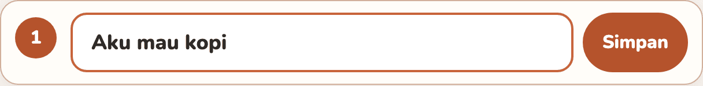
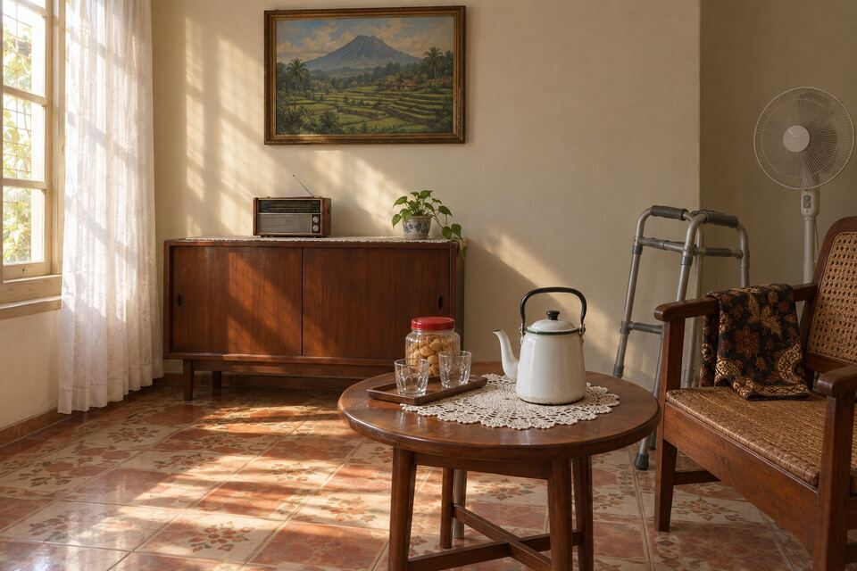
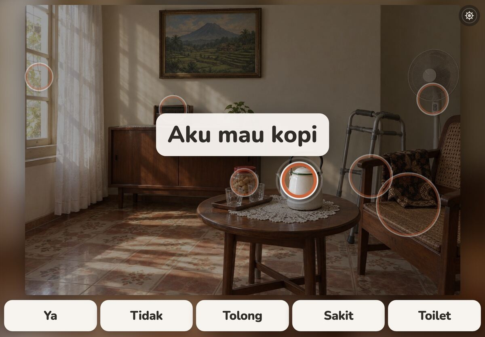
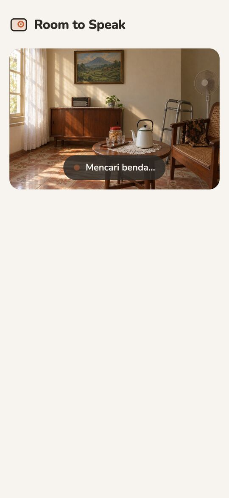
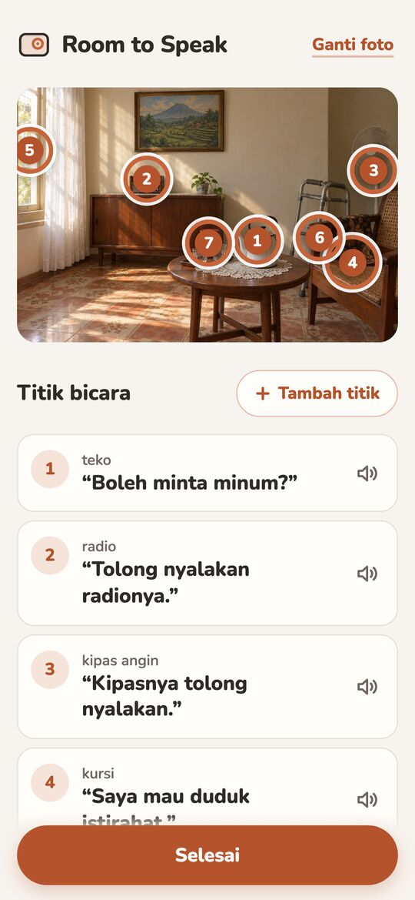
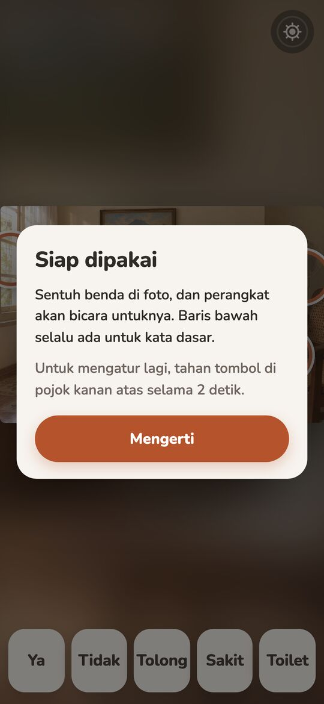
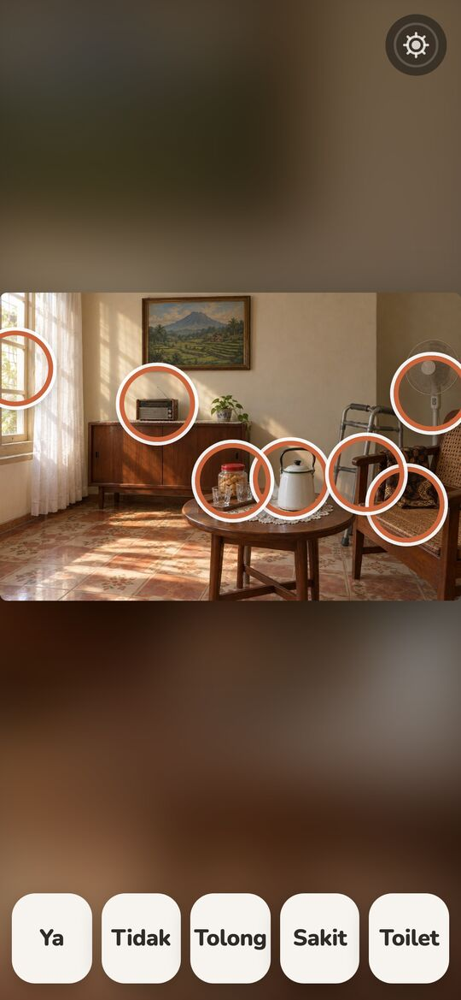

Rings on his real things
Gemini returns a box for each thing it finds. The app turns each box into a ring centred on it, sized to it within calm bounds, and nudges overlapping rings apart so each stays reachable.
After a stroke, he understands every word said to him but can't find his own. A caregiver photographs his room once. Gemini rings up to 8 things he'd want to talk about and drafts a phrase for each, which the family can change. Then one tap on the kettle, and the device says it for him.
No accountThe scene stays in this browserAI is called once, at setup

Aku mau kopi.I'd like coffee. Tap any ring to hear it, in Indonesian, the way he would.
Room photo AI-generated, so no family's home is published. Rings: Gemini's recorded answer for this photo, replayed (the page never calls the AI). The kettle's phrase was rewritten by hand, as a caregiver would. English glosses are ours.
This is the answer the app's own /api/detect returned for this photo, recorded on 4 October 2026 and replayed here. It came from the second model on the app's fallback ladder: in 4.48 s it named 7 things, wrote a phrase for each and drew a box around each one. The app turned every box into a ring.

The full response is public: media/detect-run.json. A second run on the same photo (detect-run-2.json) answered in 3.73 s with the same seven things.
For the kettle, Gemini guessed a drink: “Boleh minta minum?”, may I have a drink? The caregiver knows he means coffee. Tap the row, Ubah, type, Simpan, and the kettle now says “Aku mau kopi.”
Every phrase can be heard, rewritten or removed. A thing the AI missed is one tap on the photo away. A room holds up to 12 spots.



In Speak mode his room fills the screen. When he touches the kettle the rest of the photo dims, the kettle stays lit inside its ring, and the device speaks for him. No menus, no typing, nothing that times out.

The five words along the bottom never leave the screen, even when the photo has nothing useful. Tap one on the screen above, or tap the kettle.The five words along the bottom never leave the screen, even when the photo has nothing useful. Tap one:
Setup says so once. In Speak mode the phrase then appears in large text instead, so the tap still says something.

The same seven rings, the kettle already saying its phrase. Tap the kettle. To get back to Setup, hold the gear button in the corner for 2 seconds.
Six frames from the running app, in order: the recorded answer replayed, the kettle edited through the app's own editor, nothing drawn by hand.






The AI does the slow part once: finding the things in a room and writing the words. After that, everything he does happens on the device.
POST /api/detect
Gemini: label, phrase, box_2d
checked, at most 8
box → ring, nudged apart
saved on this device
speechSynthesis in id-ID
the room dims, the ring pulses
Gemini returns a box for each thing it finds. The app turns each box into a ring centred on it, sized to it within calm bounds, and nudges overlapping rings apart so each stays reachable.
The detect helper tries each model in turn, inside a 55 s budget. Times as measured on 6 test rooms.
gemini-3.8-flashtightest boxes, ~4–12 sgemini-3.1-flash-lite~3–10 s · answered the call on this pagedeepseek-flashslightly looser boxes, ~6–10 sEvery answer is checked before the app sees it: four numbers in 0–1000, a real phrase, at most 8 items. Malformed items are dropped, never repaired.
api/detect.ts · shared/validate.tsOnly a finger that lifts inside the ring it started in speaks. A second finger cancels, so a resting palm stays quiet.
pointerup · nearestRingPhrases are spoken by the device's own voice, interrupting the last one. The scene is kept in this browser, not on a server.
speechSynthesis · localStorageYes, no, help, pain, toilet: always on screen, even when the AI found nothing useful.
CORE_WORDSSetup opens only after a 2-second hold on the corner button. A short press just explains itself.
HoldButton · 2 sLifted word for word from the limits section of the README.
A communication-aid prototype, not a medical device or therapy; no clinical claims.
README · Limits of this proof of concept
One room, one device, device voice only. A recorded family voice, more scenes and sharing between family members are out of scope.
README · Limits of this proof of concept
Detection quality depends on the photo; the caregiver can always remove, rename or add spots by hand.
README · Limits of this proof of concept
Built with the Devpost Learn skill pack. The planning documents live in the repo, including every plan change the build forced.
scope.mdHis own room becomes his vocabulary.the kernel, the cut list
prd.mdSuccess is being understood with one touch, in his own room.journey, states, edge cases
spec.mdThe AI does the therapist's hand work once, then gets out of the way.stack, data, failure modes
checklist.mdCorrection is what makes the scene trustworthy.four slices, verified
Speaking runs on the device: the tap, the device's voice and the saved scene. The internet is needed once, during setup, when Gemini looks at the photo. The app isn't installable for offline use yet; that's on the scope's "later" list.
Yes. The app's first screen offers four example rooms, labelled as AI-generated; tapping one runs the real setup on that photo. Or use the button further up this page to open this room, already set up.
Once to the app's own detect helper, which asks Gemini for the objects and keeps the API key off the device. The scene (photo, rings, phrases) is then kept only in this browser's storage. No account, no server database.
The caregiver removes, rewrites or adds spots by hand: a new spot is a tap on the photo and a typed phrase. If the AI finds nothing or the request fails, Setup says so plainly and adding spots still works. The five core words work with zero spots.
Setup tells the caregiver once, and Speak mode shows the phrase in large text when a spot is tapped. Android Chrome and iOS Safari ship an Indonesian voice. English is available at setup.
No. It's a communication-aid proof of concept, built on visual scene displays, a known approach in AAC (tools that speak for people who can't). It makes no clinical claims.
The app, every screen, and the seven rings: they are Gemini's recorded answer for this photo, replayed so the page never calls the AI. The room itself is AI-generated so that no family's home is published, and one phrase was rewritten by hand, as a caregiver would.
Aku mau kopi.
I'd like coffee. One photo, one tap, his words.